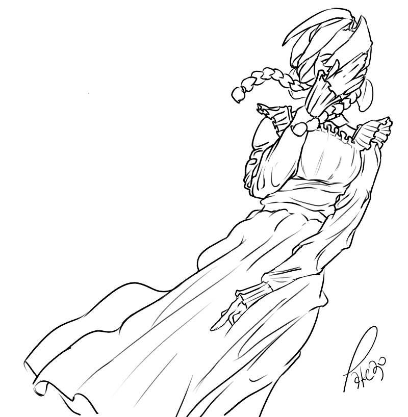
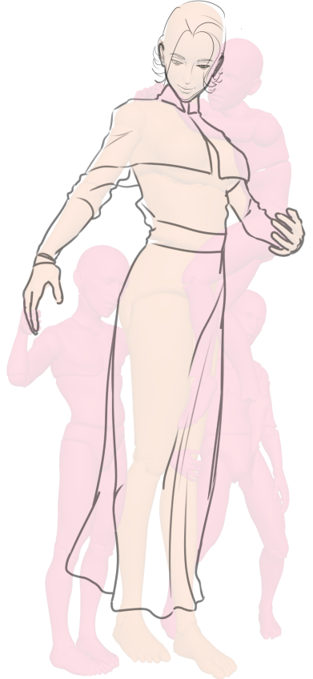
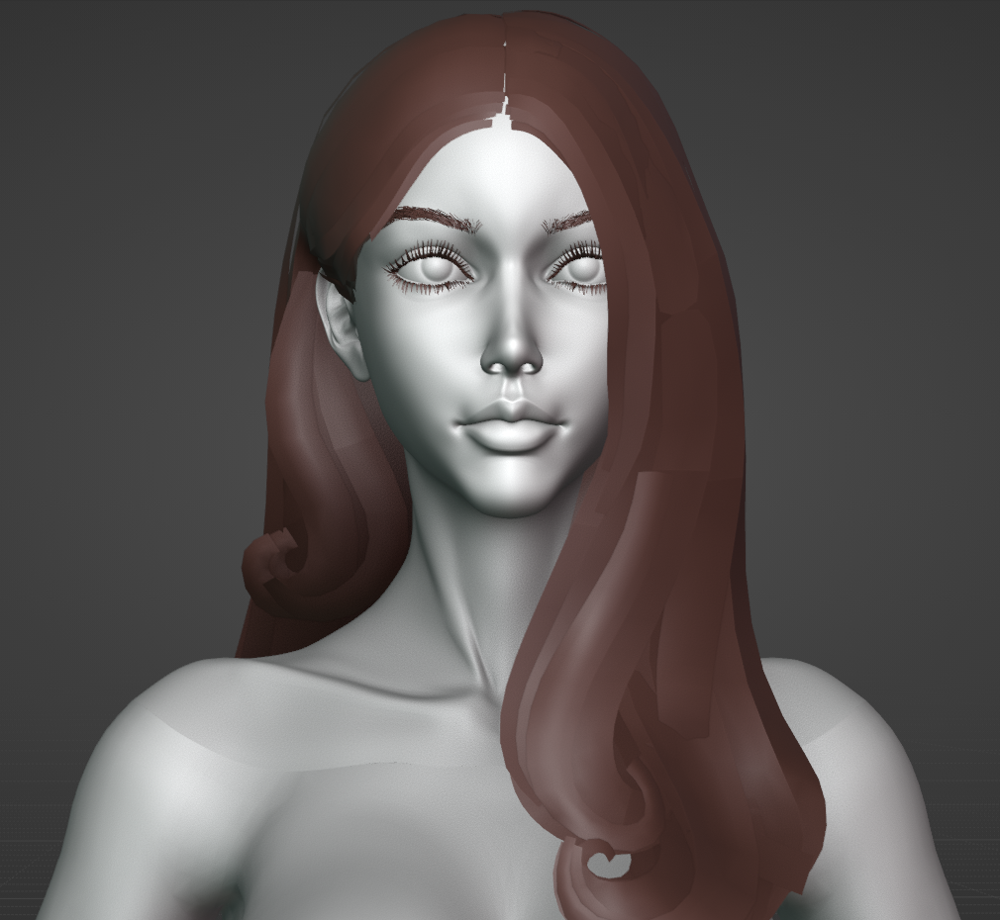
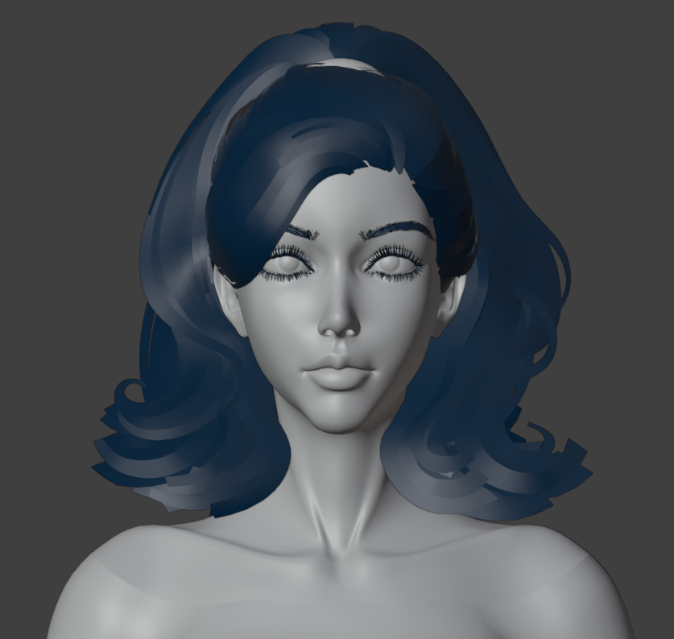
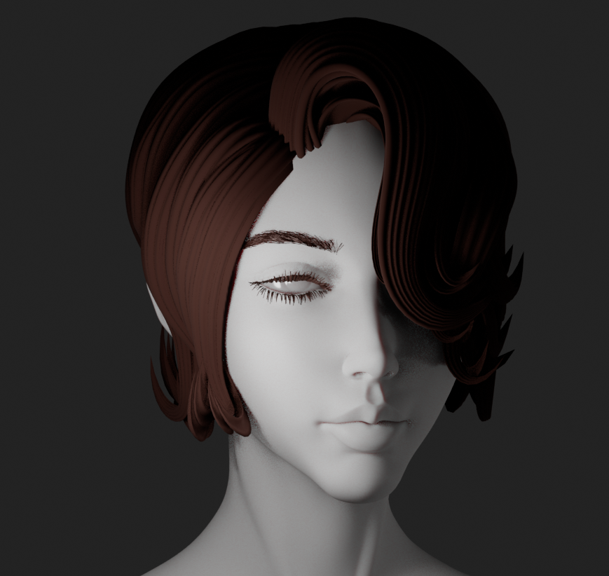
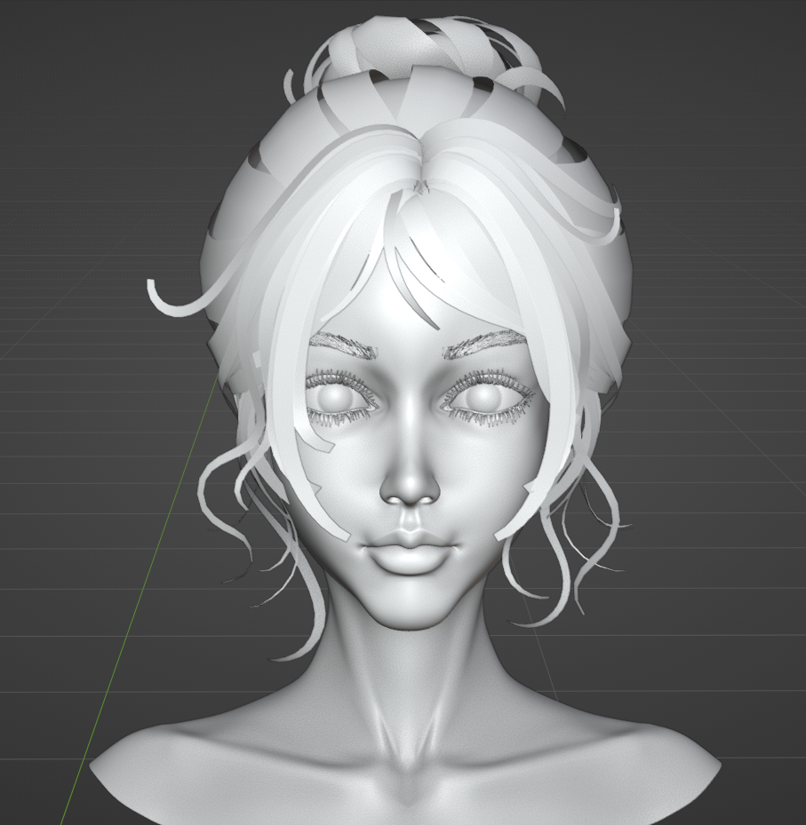
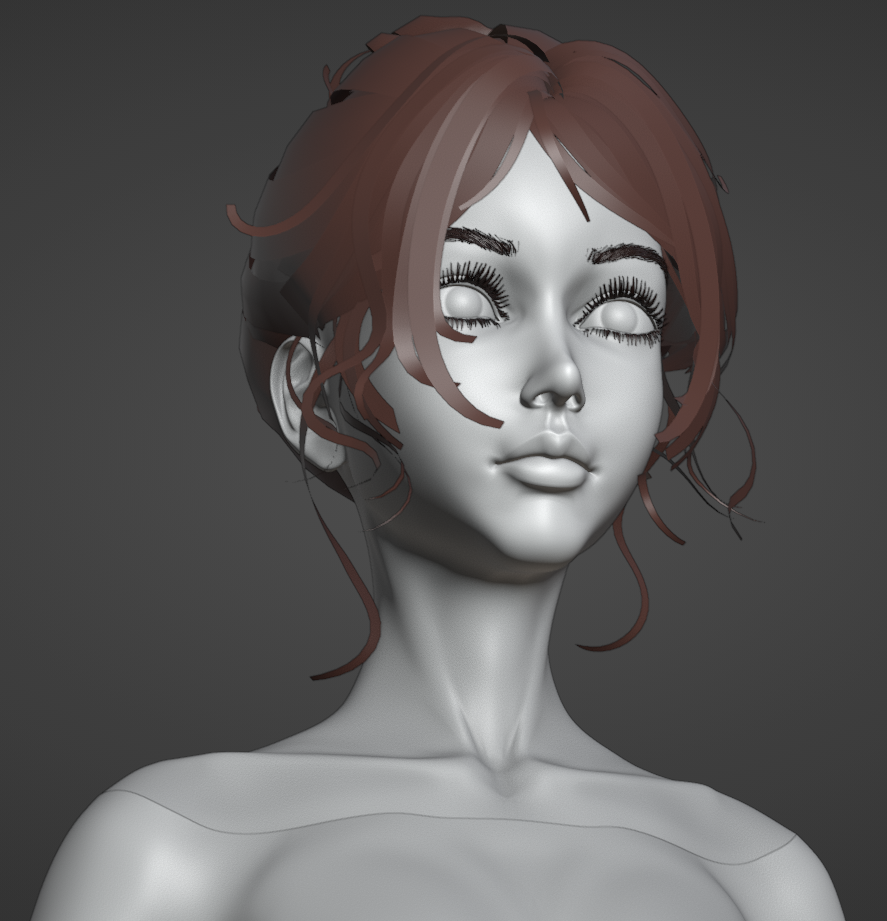

Alyna
Tags: project-zaman characters character protagonist emotional-anchor alyna hope established
“The One Who Returned”
She left. Then she came back. Not because she was ordered to, and not because anyone expected her to. She returned because she chose to. That distinction is everything.
MBTI: INFJ (Not judged completely)
Age: Four years older than the original MC
Height: 172 cm
Attire: Vintage black-and-white caretaker uniform
Status: Deceased; killed by accidental gunfire during a confrontation with Noam
Overview
Alyna was originally employed as a caretaker within the cult’s facility, where the original MC was confined after his extraction from Ashbourne Children’s Home.
What began as professional responsibility gradually became something neither of them could easily define. Their bond formed through patience, quiet presence, and the rare experience of being genuinely recognized by another person.
When Alyna resigned, she did not disappear from his life. She continued visiting him privately in the facility garden, without instruction, payment, or obligation.
Her care did not end when her employment did.
Alyna serves as the emotional axis of Project ZAMAN. Her importance does not come primarily from knowledge, strategy, or power, although she eventually gains all three. She matters because she gives the original MC’s soul something stable around which it can organize itself.
Her death destroys that stability.
The grief that follows becomes one of the central forces behind the original MC’s collapse, the unveiling of the Eleventh Chamber, and the eventual Oscillation of Eras.
Appearance
Alyna stands at 172 centimeters, making her noticeably taller than the original MC during their youth.
Her appearance is composed, practical, and restrained. She carries herself with quiet certainty rather than formal authority. Her calmness is not passivity. It comes from having made difficult decisions and accepting the weight of them.
Her vintage black-and-white caretaker uniform remains visually associated with her even after her resignation.
She does not continue wearing it out of loyalty to the institution. Instead, she separates the identity of a caretaker from the employment that first assigned it to her.
The cult gave her the role.
Alyna decided what the role meant.
Personality
Alyna is observant, deliberate, and emotionally perceptive. She notices changes in behavior that others dismiss and recognizes distress before it is openly expressed.
She rarely acts without careful thought. Once she reaches a moral decision, however, she becomes extremely difficult to redirect.
Her compassion is not softness without boundaries. It is an active commitment that repeatedly places her in conflict with Anthropos, Axios, and the cult’s hidden authority.
She does not see the original MC as a subject, a gifted child, or an object of pity.
She sees him as a person.
Within an institution built to erase personhood, this simple recognition becomes a radical act.
Narrative Arc
Caretaker
Alyna is hired to manage the original MC’s daily life inside the facility.
Her responsibilities include maintaining his routine, supervising meals, monitoring his condition, and preparing him for the cult’s procedures. Through this work, she gradually recognizes the cruelty hidden beneath the facility’s clinical language and ceremonial discipline.
Her relationship with him slowly exceeds the limits of her assigned role. She becomes one of the few people whose presence does not demand performance, obedience, or usefulness from him.
For the original MC, Alyna becomes associated with safety, continuity, and the possibility of being seen without being examined.
She cannot protect him from every procedure, nor can she immediately remove him from the institution. What she can offer is a space in which he is not required to become what the cult expects.
Resignation
Alyna eventually resigns under circumstances that place her outside the cult’s immediate authority.
Leaving the institution does not mean abandoning the original MC.
She continues returning through informal visits in the facility garden. These meetings are no longer part of her work. They offer her no reward and expose her to considerable risk.
The repeated choice to return becomes the foundation of their bond.
Her presence is meaningful precisely because it is voluntary.
The cult can assign duties, enforce routines, and demand obedience. It cannot manufacture the kind of loyalty Alyna gives freely.
Believing Him Dead
After leaving the facility, Alyna is led to believe that the original MC died during an experiment.
The loss brings her to the edge of ending her own life at a harbor.
No one arrives to stop her.
She pulls herself back.
This moment does not erase her grief or restore her previous sense of purpose. Instead, it becomes the point at which her care for one person expands into resistance against the structure that harmed him.
She cannot retrieve the person she believes she has lost, but she can prevent the cult from repeating the same violence against others.
Her decision to survive becomes the beginning of her rebellion.
Underground Resistance
Alyna establishes an independent resistance network against the cult.
She begins without institutional protection, formal authority, or reliable resources. What starts as a personal refusal gradually develops into an organized effort to expose the cult’s operations, disrupt its acquisition network, and remove vulnerable children from its control.
Her most significant success is the rescue of the children held through Ashbourne Children’s Home.
Through this work, Alyna evolves from caretaker to organizer, infiltrator, and protector. The scale of her actions changes, but their foundation remains the same.
She continues doing for others what she first did for the original MC:
She sees people the system has reduced to functions, and she chooses not to leave them there.
Reunion
Alyna eventually discovers that the original MC survived.
Their reunion restores a connection both believed had been permanently severed. The bond endures, but not because time and suffering have left it untouched.
It endures because both of them choose to recognize it again.
The reunion does not return them to their earlier lives. Too much has changed, and neither remains entirely recognizable as the person the other remembers.
What returns is not innocence.
It is recognition.
For the original MC, Alyna once again becomes the emotional axis around which his damaged sense of self begins to stabilize.
For Alyna, his survival confirms that her resistance was not merely an answer to grief. It was a continuation of the promise contained within her decision to return.
Death
Alyna is killed by accidental gunfire during a confrontation involving Noam.
Her death is neither ritualistic nor heroic. It is abrupt, collateral, and fundamentally without justice.
She is not killed because of prophecy, sacrifice, or destiny.
She dies because violence escapes the control of those who believe they can command it.
The original MC survives the confrontation, but the structure holding his identity together does not.
Later, Alyna’s preserved body is revealed inside the Eleventh Chamber. The grief attached to her death collides with the truth of what the cult has done to her remains.
Both of the original MC’s soul-forms enter simultaneous fluctuation.
The resulting instability triggers the Oscillation of Eras, causing Soul Fission and the creation of Subject-001 and Subject-002.
Alyna’s death does not cause the Oscillation by itself.
It creates the wound that the Eleventh Chamber later tears open.
Final Words
Before her death, Alyna leaves the original MC with four final instructions:
-
Stand for goodness and justice.
-
Bring an end to evil.
-
Remain himself.
-
Never allow the shadow form to overtake him.
These words are inherited most strongly by Subject-001, the fragment carrying the original MC’s soul, empathy, grief, and moral continuity.
They become the foundation of his personal law.
Alyna’s words are not reassurance. They do not promise that he will survive, recover, or be forgiven.
They are a charge.
They ask him to preserve his moral identity even when his body, memories, and reality no longer remain stable.
Her final instruction is especially important. The shadow form may offer strength, certainty, and protection, but surrendering to it would mean allowing suffering to erase the person she fought to preserve.
The Bond
The relationship between Alyna and the original MC is founded upon chosen emotional devotion.
There is no physical intimacy between them, either present or intended. The strength of their bond comes from recognition, trust, loyalty, and the repeated decision to remain present.
Alyna is not bound to him by blood, duty, fate, or institutional command.
She returns because she chooses him.
The original MC does not love her because she rescues him from every danger. She cannot. He loves her because she sees the person beneath the classifications imposed upon him and refuses to treat that person as already lost.
Their bond is therefore not built upon rescue.
It is built upon recognition.
After the Oscillation, this bond survives primarily within Subject-001.
He inherits the emotional continuity of the original MC, including his attachment to Alyna and the grief of losing her. The body that once knew her belongs to Subject-002, but the soul that understood what she meant continues through Subject-001.
The bond becomes both inheritance and wound.
One fragment carries the memory of what she meant.
The other carries the body through which that bond was once experienced.
Relationship to Subject-001
Subject-001 does not merely remember Alyna.
He is the continuation of the part of the original MC that loved her.
Her final words shape his refusal to surrender fully to the shadow form, even when that form offers strength, certainty, and protection. Violating her instruction would not simply mean disobeying the dead.
It would mean abandoning the part of himself she fought to preserve.
Alyna therefore remains active within the narrative after death, not as a ghost or guiding spirit, but as a moral structure carried inside Subject-001.
Her influence becomes strongest whenever he must decide whether survival justifies becoming something she would no longer recognize.
Every such decision forces him to confront the same question:
Can he use the shadow without allowing it to replace him?
Legacy
Alyna does not survive the central catastrophe, but she never disappears from the story.
Her actions dismantle parts of the cult’s recruitment network. The children rescued from Ashbourne survive because of her. Her resistance exposes weaknesses that later characters can exploit. Her death contributes to the emotional conditions that produce the Oscillation, while her final words help prevent Subject-001 from being entirely consumed by its consequences.
Her legacy is divided across the narrative:
| Legacy | What Remains |
|---|---|
| The Ashbourne children | The lives she removed from the cult’s control |
| The resistance network | The structure she built without institutional support |
| Subject-001 | Her final instructions, emotional bond, and moral influence |
| The Eleventh Chamber | The cult’s attempt to reduce her body to an object of preservation |
| The Oscillation | The catastrophe triggered when the truth of her fate became unbearable |
Whether any part of Alyna’s consciousness persists beyond death remains unresolved.
Her body was preserved.
Her influence survived.
Whether her soul did the same remains one of the narrative’s central metaphysical questions.
Thematic Significance
Alyna represents the difference between an assigned role and a chosen commitment.
Anthropos calls its work humanitarian.
Axios calls its work necessary research.
Gibborim calls its control stewardship.
Alyna performs genuine care without requiring a doctrine to justify it.
She demonstrates that moral action does not require perfect knowledge, institutional permission, or certainty of success. It requires the willingness to recognize another person’s suffering and accept responsibility for how one responds to it.
The cult repeatedly reduces human beings to vessels, subjects, instruments, and resources.
Alyna treats them as people.
That is why she becomes dangerous.
She exposes the failure at the center of the cult’s philosophy. Its members claim to serve humanity while refusing to recognize the humanity of those directly before them.
Alyna possesses no miracle, sacred title, or metaphysical authority.
She simply chooses to care, and then accepts the consequences of that choice.
She did not stay because she had to. She stayed because she decided to. That was harder, rarer, and the reason it was real.
Visual References
Concept
Asset Tags: concept
Youth


3D Visuals
Asset Tags: 3d-model
Adult



Youth

